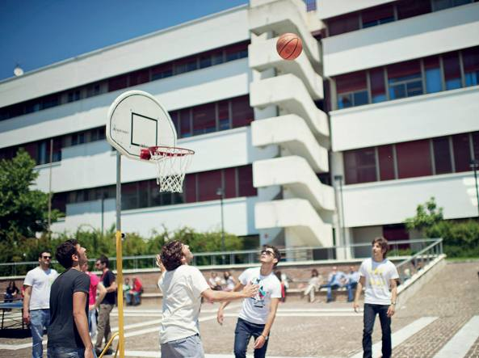
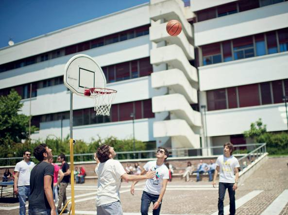
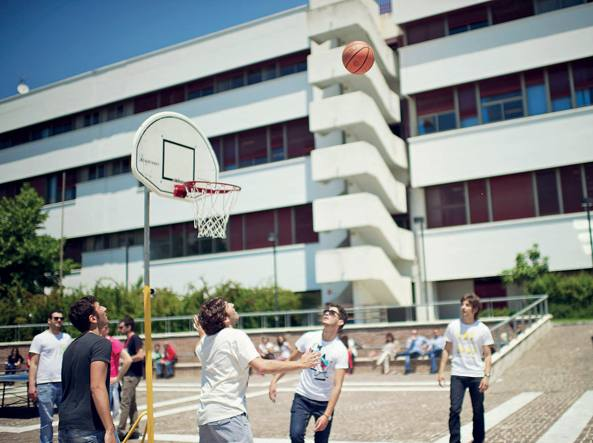

La mia carriera Universitaria comincia all'età di 20 anni iscrivendomi all'Università degli studi di Salerno nel paese di Fisciano.
La scelta sul percorso di studi, Ingegneria Informatica, è stata dettata dalla passione che ho per l'informatica e la matematica, due materie che mi hanno sempre suscitato interesse fin dal Liceo.
Durante il mio percorso di studi c'è stato un corso, di poche ore, che mi ha incuriosito ed è stato Tecnologie e Software per il Web, il quale insegnava i linguaggi di programmazione HTML, CSS e Javascript. Da qui è nata la mia passione e la mia curiosità per le pagine Web.
Alla fine del percorso ho svolto il tirocinio, di 275 ore, presso l'azienda CoRiTeL, un consorzio di ricerca di Telecomunicazioni, all'interno del Campus di Fisciano. Durante il tirocinio acquisisco competenze con il linguaggio di programmazione Python per concludere un progetto riuardante L'analisi di dati di esercizio di un cluster di elaboratori.
